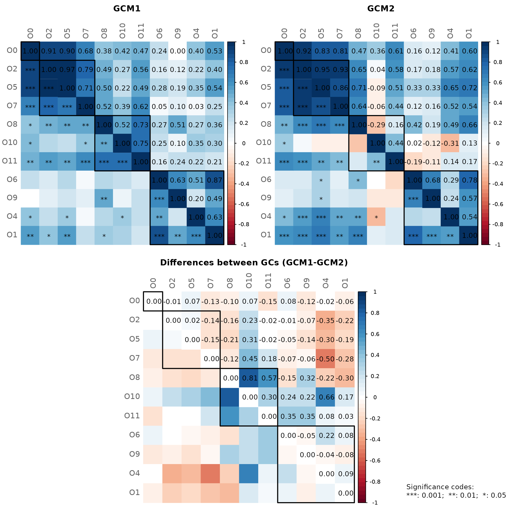

One of NetCoMi’s strengths is the ability to compare networks between
two groups. The netCompare() function is used for this
task.
Network construction
The amgut data set is split by "SEASONAL_ALLERGIES"
leading to two subsets of samples (with and without seasonal allergies).
We ignore the “None” group.
data("amgut2.filt.phy")
# Split the phyloseq object into two groups
amgut_season_yes <- phyloseq::subset_samples(amgut2.filt.phy,
SEASONAL_ALLERGIES == "yes")
amgut_season_no <- phyloseq::subset_samples(amgut2.filt.phy,
SEASONAL_ALLERGIES == "no")
amgut_season_yes
#> phyloseq-class experiment-level object
#> otu_table() OTU Table: [ 138 taxa and 121 samples ]
#> sample_data() Sample Data: [ 121 samples by 166 sample variables ]
#> tax_table() Taxonomy Table: [ 138 taxa by 7 taxonomic ranks ]
amgut_season_no
#> phyloseq-class experiment-level object
#> otu_table() OTU Table: [ 138 taxa and 163 samples ]
#> sample_data() Sample Data: [ 163 samples by 166 sample variables ]
#> tax_table() Taxonomy Table: [ 138 taxa by 7 taxonomic ranks ]The 50 nodes with highest variance are selected for network construction to get smaller networks.
We filter the 121 samples (sample size of the smaller group) with highest frequency to make the sample sizes equal and thus ensure comparability.
n_yes <- phyloseq::nsamples(amgut_season_yes)
# Network construction
net_season <- netConstruct(data = amgut_season_no,
data2 = amgut_season_yes,
filtTax = "highestVar",
filtTaxPar = list(highestVar = 50),
filtSamp = "highestFreq",
filtSampPar = list(highestFreq = n_yes),
measure = "spring",
measurePar = list(nlambda = 10,
rep.num = 10,
Rmethod = "approx"),
normMethod = "none",
zeroMethod = "none",
sparsMethod = "none",
dissFunc = "signed",
verbose = 2,
seed = 123456)
#> Checking input arguments ... Done.
#> Data filtering ...
#> 42 samples removed in data set 1.
#> 0 samples removed in data set 2.
#> 96 taxa removed in each data set.
#> 1 rows with zero sum removed in group 2.
#> 42 taxa and 121 samples remaining in group 1.
#> 42 taxa and 120 samples remaining in group 2.
#>
#> Calculate 'spring' associations ... Registered S3 method overwritten by 'dendextend':
#> method from
#> rev.hclust vegan
#> Registered S3 method overwritten by 'seriation':
#> method from
#> reorder.hclust vegan
#> Done.
#>
#> Calculate associations in group 2 ... Done.Alternatively, a group vector could be passed to group,
according to which the data set is split into two groups:
# Get count table
countMat <- phyloseq::otu_table(amgut2.filt.phy)
# netConstruct() expects samples in rows
countMat <- t(as(countMat, "matrix"))
group_vec <- phyloseq::get_variable(amgut2.filt.phy, "SEASONAL_ALLERGIES")
# Select the two groups of interest (level "none" is excluded)
sel <- which(group_vec %in% c("no", "yes"))
group_vec <- group_vec[sel]
countMat <- countMat[sel, ]
net_season <- netConstruct(countMat,
group = group_vec,
filtTax = "highestVar",
filtTaxPar = list(highestVar = 50),
filtSamp = "highestFreq",
filtSampPar = list(highestFreq = n_yes),
measure = "spring",
measurePar = list(nlambda=10,
rep.num=10,
Rmethod = "approx"),
normMethod = "none",
zeroMethod = "none",
sparsMethod = "none",
dissFunc = "signed",
verbose = 3,
seed = 123456)Network analysis
The object returned by netConstruct() containing both
networks is again passed to netAnalyze(). Network
properties are computed for both networks simultaneously.
To demonstrate further functionalities of netAnalyze(),
we play around with the available arguments, even if the chosen setting
might not be optimal.
-
centrLCC = FALSE: Centralities are calculated for all nodes (not only for the largest connected component). -
avDissIgnoreInf = TRUE: Nodes with an infinite dissimilarity are ignored when calculating the average dissimilarity. -
sPathNorm = FALSE: Shortest paths are not normalized by average dissimilarity. -
hubPar = c("degree", "eigenvector"): Hubs are nodes with highest degree and eigenvector centrality at the same time. -
lnormFit = TRUEandhubQuant = 0.9: A log-normal distribution is fitted to the centrality values to identify nodes with “highest” centrality values. Here, a node is identified as hub if for each of the three centrality measures, the node’s centrality value is above the 90% quantile of the fitted log-normal distribution. - The non-normalized centralities are used for all four measures.
Note! The arguments must be set carefully, depending on the research questions. NetCoMi’s default values are not generally preferable in all practical cases!
props_season <- netAnalyze(net_season,
centrLCC = FALSE,
avDissIgnoreInf = TRUE,
sPathNorm = FALSE,
clustMethod = "cluster_fast_greedy",
hubPar = c("degree", "eigenvector"),
hubQuant = 0.9,
lnormFit = TRUE,
normDeg = FALSE,
normBetw = FALSE,
normClose = FALSE,
normEigen = FALSE)
#> Warning: The `normEigen` argument of `netAnalyze()` always as if TRUE as of NetCoMi
#> 1.2.0.
#> ℹ Normalization is always performed (due to changes in igraph).
#> ℹ The deprecated feature was likely used in the NetCoMi package.
#> Please report the issue at <https://github.com/stefpeschel/NetCoMi/issues>.
#> This warning is displayed once every 8 hours.
#> Call `lifecycle::last_lifecycle_warnings()` to see where this warning was
#> generated.
summary(props_season)#>
#> Component sizes
#> ```````````````
#> group '1':
#> size: 28 1
#> #: 1 14
#> group '2':
#> size: 31 8 1
#> #: 1 1 3
#> ______________________________
#> Global network properties
#> `````````````````````````
#> Largest connected component (LCC):
#> group '1' group '2'
#> Relative LCC size 0.66667 0.73810
#> Clustering coefficient 0.15161 0.27111
#> Modularity 0.62611 0.45823
#> Positive edge percentage 86.66667 100.00000
#> Edge density 0.07937 0.12473
#> Natural connectivity 0.04539 0.04362
#> Vertex connectivity 1.00000 1.00000
#> Edge connectivity 1.00000 1.00000
#> Average dissimilarity* 0.67251 0.68178
#> Average path length** 3.40008 1.86767
#>
#> Whole network:
#> group '1' group '2'
#> Number of components 15.00000 5.00000
#> Clustering coefficient 0.15161 0.29755
#> Modularity 0.62611 0.55684
#> Positive edge percentage 86.66667 100.00000
#> Edge density 0.03484 0.08130
#> Natural connectivity 0.02826 0.03111
#> -----
#> *: Dissimilarity = 1 - edge weight
#> **: Path length = Sum of dissimilarities along the path
#>
#> ______________________________
#> Clusters
#> - In the whole network
#> - Algorithm: cluster_fast_greedy
#> ````````````````````````````````
#> group '1':
#> name: 0 1 2 3 4 5
#> #: 14 7 6 5 4 6
#>
#> group '2':
#> name: 0 1 2 3 4 5
#> #: 3 5 14 4 8 8
#>
#> ______________________________
#> Hubs
#> - In alphabetical/numerical order
#> - Based on log-normal quantiles of centralities
#> ```````````````````````````````````````````````
#> group '1' group '2'
#> 307981 322235
#> 363302
#>
#> ______________________________
#> Centrality measures
#> - In decreasing order
#> - Computed for the complete network
#> ````````````````````````````````````
#> Degree (unnormalized):
#> group '1' group '2'
#> 307981 5 2
#> 9715 5 5
#> 364563 4 4
#> 259569 4 5
#> 322235 3 9
#> ______ ______
#> 322235 3 9
#> 363302 3 9
#> 158660 2 6
#> 188236 3 5
#> 259569 4 5
#>
#> Betweenness centrality (unnormalized):
#> group '1' group '2'
#> 307981 231 0
#> 331820 170 9
#> 158660 162 80
#> 188236 161 85
#> 322235 159 126
#> ______ ______
#> 322235 159 126
#> 363302 74 93
#> 188236 161 85
#> 158660 162 80
#> 326792 17 58
#>
#> Closeness centrality (unnormalized):
#> group '1' group '2'
#> 307981 18.17276 7.80251
#> 9715 15.8134 9.27254
#> 188236 15.7949 23.24055
#> 301645 15.30177 9.01509
#> 364563 14.73566 21.21352
#> ______ ______
#> 322235 13.50232 26.36749
#> 363302 12.30297 24.19703
#> 158660 13.07106 23.31577
#> 188236 15.7949 23.24055
#> 326792 14.61391 22.52157
#>
#> Eigenvector centrality (unnormalized):
#> group '1' group '2'
#> 307981 1 0.13142
#> 9715 0.83277 0.20513
#> 301645 0.78551 0.16298
#> 326792 0.50706 0.42082
#> 188236 0.48439 0.56626
#> ______ ______
#> 322235 0.03281 0.79487
#> 363302 0.06613 0.76293
#> 188236 0.48439 0.56626
#> 194648 0.00687 0.52039
#> 184983 0.172 0.49611Visual network comparison
First, the layout is computed separately in both groups (qgraph’s “spring” layout in this case).
Node sizes are scaled according to the mclr-transformed data since
SPRING uses the mclr transformation as normalization
method.
Node colors represent clusters. Note that by default, two clusters
have the same color in both groups if they have at least two nodes in
common (sameColThresh = 2). Set sameClustCol
to FALSE to get different cluster colors.
plot(props_season,
sameLayout = FALSE,
nodeColor = "cluster",
nodeSize = "mclr",
labelScale = FALSE,
cexNodes = 1.5,
cexLabels = 2.5,
cexHubLabels = 3,
cexTitle = 3.7,
groupNames = c("No seasonal allergies", "Seasonal allergies"),
hubBorderCol = "gray40")
legend("bottom", title = "estimated association:", legend = c("+","-"),
col = c("#009900","red"), inset = 0.02, cex = 4, lty = 1, lwd = 4,
bty = "n", horiz = TRUE)Using different layouts leads to a “nice-looking” network plot for each group, however, it is difficult to identify group differences at first glance.
Thus, we now use the same layout in both groups. In the following, the layout is computed for group 1 (the left network) and taken over for group 2.
rmSingles is set to "inboth" because only
nodes that are unconnected in both groups can be removed if the same
layout is used.
plot(props_season,
sameLayout = TRUE,
layoutGroup = 1,
rmSingles = "inboth",
nodeSize = "mclr",
labelScale = FALSE,
cexNodes = 1.5,
cexLabels = 2.5,
cexHubLabels = 3,
cexTitle = 3.8,
groupNames = c("No seasonal allergies", "Seasonal allergies"),
hubBorderCol = "gray40")
legend("bottom", title = "estimated association:", legend = c("+","-"),
col = c("#009900","red"), inset = 0.02, cex = 4, lty = 1, lwd = 4,
bty = "n", horiz = TRUE)In the above plot, we can see clear differences between the groups. The OTU “322235”, for instance, is more strongly connected in the “Seasonal allergies” group than in the group without seasonal allergies, which is why it is a hub on the right, but not on the left.
However, if the layout of one group is simply taken over to the
other, one of the networks (here the “seasonal allergies” group) is
usually not that nice-looking due to the long edges. Therefore, NetCoMi
(>= 1.0.2) offers a further option
(layoutGroup = "union"), where a union of the two layouts
is used in both groups. In doing so, the nodes are placed as optimal as
possible equally for both networks.
The idea and R code for this functionality were provided by Christian L. Müller and Alice Sommer
plot(props_season,
sameLayout = TRUE,
repulsion = 0.95,
layoutGroup = "union",
rmSingles = "inboth",
nodeSize = "mclr",
labelScale = FALSE,
cexNodes = 1.5,
cexLabels = 2.5,
cexHubLabels = 3,
cexTitle = 3.8,
groupNames = c("No seasonal allergies", "Seasonal allergies"),
hubBorderCol = "gray40")
legend("bottom", title = "estimated association:", legend = c("+","-"),
col = c("#009900","red"), inset = 0.02, cex = 4, lty = 1, lwd = 4,
bty = "n", horiz = TRUE)Quantitative network comparison
Since runtime is considerably increased if permutation tests are
performed, we set the permTest parameter to
FALSE. See the tutorial_createAssoPerm file
for a network comparison including permutation tests.
Since permutation tests are still conducted for the Adjusted Rand Index, a seed should be set for reproducibility.
comp_season <- netCompare(props_season,
permTest = FALSE,
verbose = FALSE,
seed = 123456)
summary(comp_season,
groupNames = c("No allergies", "Allergies"),
showCentr = c("degree", "between", "closeness"),
numbNodes = 5)#>
#> Comparison of Network Properties
#> ----------------------------------
#> CALL:
#> netCompare(x = props_season, permTest = FALSE, verbose = FALSE,
#> seed = 123456)
#>
#> ______________________________
#> Global network properties
#> `````````````````````````
#> Largest connected component (LCC):
#> No allergies Allergies difference
#> Relative LCC size 0.667 0.738 0.071
#> Clustering coefficient 0.152 0.271 0.120
#> Modularity 0.626 0.458 0.168
#> Positive edge percentage 86.667 100.000 13.333
#> Edge density 0.079 0.125 0.045
#> Natural connectivity 0.045 0.044 0.002
#> Vertex connectivity 1.000 1.000 0.000
#> Edge connectivity 1.000 1.000 0.000
#> Average dissimilarity* 0.673 0.682 0.009
#> Average path length** 3.400 1.868 1.532
#>
#> Whole network:
#> No allergies Allergies difference
#> Number of components 15.000 5.000 10.000
#> Clustering coefficient 0.152 0.298 0.146
#> Modularity 0.626 0.557 0.069
#> Positive edge percentage 86.667 100.000 13.333
#> Edge density 0.035 0.081 0.046
#> Natural connectivity 0.028 0.031 0.003
#> -----
#> *: Dissimilarity = 1 - edge weight
#> **: Path length = Sum of dissimilarities along the path
#>
#> ______________________________
#> Jaccard index (similarity betw. sets of most central nodes)
#> ```````````````````````````````````````````````````````````
#> Jacc P(<=Jacc) P(>=Jacc)
#> degree 0.556 0.957578 0.144846
#> betweenness centr. 0.333 0.650307 0.622822
#> closeness centr. 0.231 0.322424 0.861268
#> eigenvec. centr. 0.100 0.017593 * 0.996692
#> hub taxa 0.000 0.296296 1.000000
#> -----
#> Jaccard index in [0,1] (1 indicates perfect agreement)
#>
#> ______________________________
#> Adjusted Rand index (similarity betw. clusterings)
#> ``````````````````````````````````````````````````
#> wholeNet LCC
#> ARI 0.232 0.355
#> p-value 0.000 0.000
#> -----
#> ARI in [-1,1] with ARI=1: perfect agreement betw. clusterings
#> ARI=0: expected for two random clusterings
#> p-value: permutation test (n=1000) with null hypothesis ARI=0
#>
#> ______________________________
#> Graphlet Correlation Distance
#> `````````````````````````````
#> wholeNet LCC
#> GCD 1.577 1.863
#> -----
#> GCD >= 0 (GCD=0 indicates perfect agreement between GCMs)
#>
#> ______________________________
#> Centrality measures
#> - In decreasing order
#> - Computed for the whole network
#> ````````````````````````````````````
#> Degree (unnormalized):
#> No allergies Allergies abs.diff.
#> 322235 3 9 6
#> 363302 3 9 6
#> 469709 0 4 4
#> 158660 2 6 4
#> 223059 0 4 4
#>
#> Betweenness centrality (unnormalized):
#> No allergies Allergies abs.diff.
#> 307981 231 0 231
#> 331820 170 9 161
#> 259569 137 34 103
#> 158660 162 80 82
#> 184983 92 12 80
#>
#> Closeness centrality (unnormalized):
#> No allergies Allergies abs.diff.
#> 469709 0 21.203 21.203
#> 541301 0 20.942 20.942
#> 181016 0 19.498 19.498
#> 361496 0 19.349 19.349
#> 223059 0 19.261 19.261
#>
#> _________________________________________________________
#> Significance codes: ***: 0.001, **: 0.01, *: 0.05, .: 0.1